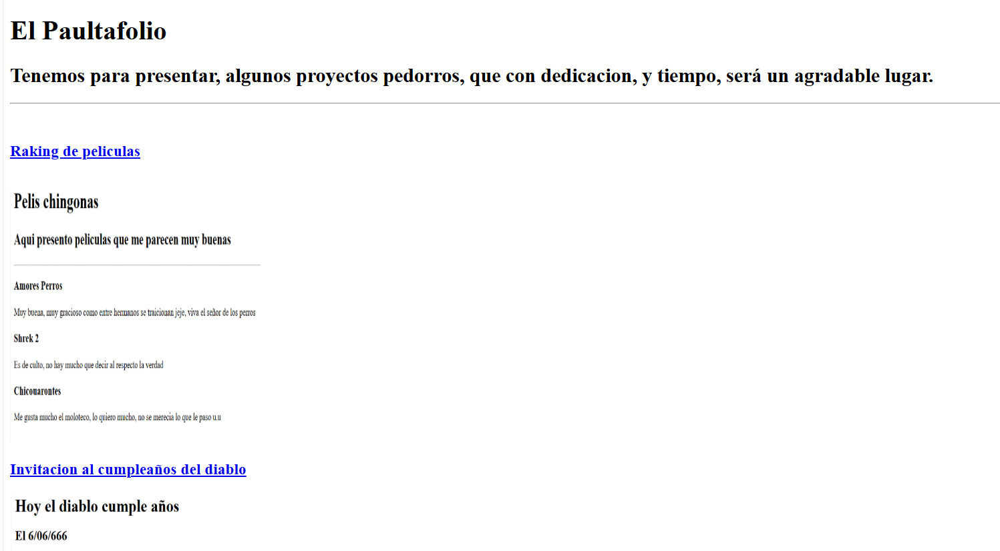

El Paultal
El Paultal, es el respectivo lugar en donde se repondran todos los respectivos trabajos de Paul Cisneros,
en donde se abordarán distintos tópicos del trabajo realizado por el presente autor, esta es la primera version,
ya que este lugar se piensa como un espacio de distintos trabajos que a lo largo de lo que realice, vayan dandole vida al lugar

Estudios
Las humanidades y la tecnica logico matematica son algo en lo que me he desarrollado a lo largo de mi vida estudiantil,
presentando asi, los distintos planteles en donde me he forjado mi labor estudiantil.
- Estudios de eduacion primaria completados
- Universisdad Autonoma Nacional de México
- Educacion media superior//Colegio de Ciencias y Humanidades Plantel Sur
- Carrera tecnica en desarrollo de software y diseño de programas
- Educacion Superior//Facultad de Ciencias
- Universidad Autonoma Metropolitana
Experiencia Laboral
Mi familia se ha desempeñado en el costummer service, tal que desde pequeño, estoy realizando labores de mesero,
tal que la logistica y la eficiencia de una buen servicio son clave en mi servicio profesional, principalmente se ha formalizado seriamente en dos trabajos
- Ingenieria en Comunicaciones y Desarrollo (2019-2020)
- Certificado de Jabra 2020
- Soluciones de videoconferencia y ciberseguridad
- Raven Folks (2021-2023)
- Mesero
- Demostrador de Juegos
- Capitán de salón
Habilidades destacables
- Uso de Paqueteria Office
- Web Develper(trainee)
- Cyber Seguridad (trainee)
- Gestion logistica y optimización de procesos
Trabajos notables realizados
El Paultafolio, es mi portafolio personal, ya que, experimentar y jugar puede que no sea tan profesional,
no obstante, esto no quita los aspectos creativos e interesantes que uno puede tener.
